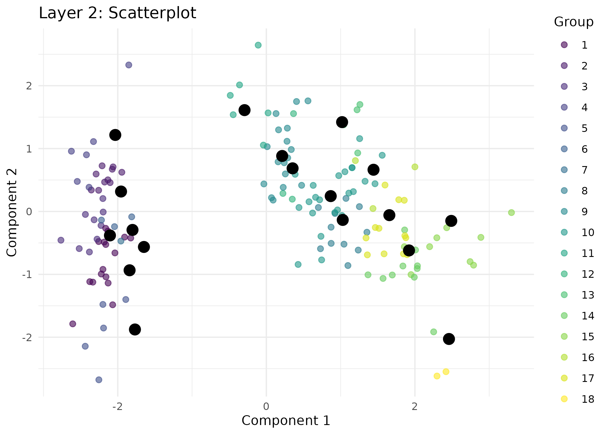
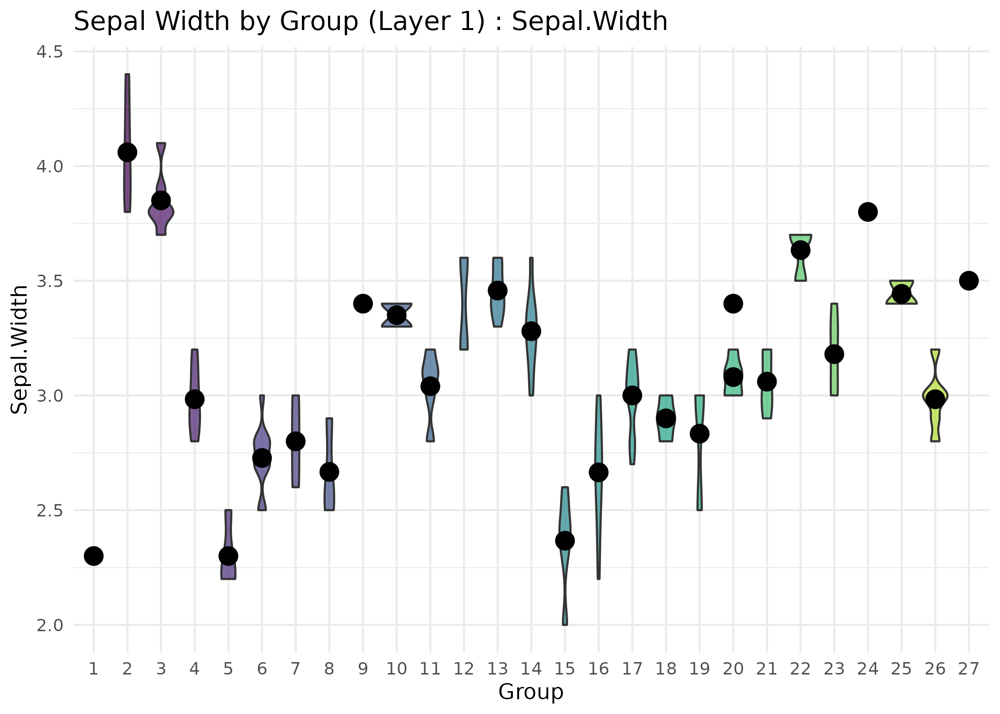

This function produces publication-quality visualizations for the results
generated by the bHIVE or honeycombHIVE functions. Users can
specify one or more layers to visualize and choose from several plot types:
Arguments
- result
A list object produced by
bHIVEorhoneycombHIVE. For multilayer models, each element represents one layer.- X
Optional. A numeric matrix or data frame of the original input features. If provided, data points will be plotted along with the prototypes.
- plot_type
Character string specifying the type of plot to generate. Options are:
"scatter": A scatterplot of data points and prototypes."boxplot": A boxplot of a selected feature by group with prototypes overlaid."violin": A violin plot of a selected feature by group with prototypes overlaid."density": Density plots of a selected feature by group with prototype markers.
- feature
Optional. For
"boxplot","violin", or"density"plots, the name or index of the feature inXto display. IfNULL, the first column is used.- transform
Logical. If
TRUEand the data (or prototypes) has more than two columns, the specified transformation is applied for scatterplots.- transformation_method
Character. The method used for dimensionality reduction. Options are
"PCA","UMAP","tSNE", or"none".- title
Character. Title for the plot.
- layer
Integer vector indicating which layer(s) of the result to visualize. For bHIVE outputs, default is
1. For multilayer honeycombHIVE outputs, specify one or more layer indices.- task
Character. The prediction task for the result: one of
"clustering"or"classification". This is used to determine how grouping is computed.- ...
Additional arguments passed to PCA, tSNE, UMAP, or ggplot functions.
Details
"scatter": A scatterplot of data points and prototypes. WhenXhas more than two columns andtransformisTRUE, a dimensionality reduction method is applied."boxplot": A boxplot of a selected feature by group with prototype values overlaid."violin": A violin plot of a selected feature by group with prototype values overlaid."density": Density plots of a selected feature by group with prototype markers.
For scatterplots the transformation can be selected from "PCA",
"UMAP", "tSNE", or "none". When multiple layers are
visualized, the prototypes and the corresponding grouping information from
each layer are combined and faceted by layer.
Examples
data(iris)
X <- as.matrix(iris[, 1:4])
# Run honeycombHIVE for clustering
res <- honeycombHIVE(X = X,
task = "clustering",
epsilon = 0.05,
layers = 3,
nAntibodies = 30,
beta = 5,
maxIter = 10,
verbose = FALSE)
# Visualize layer 2 as a scatterplot (using membership from layer 2).
visualizeHIVE(result = res,
X = iris[, 1:4],
plot_type = "scatter",
title = "Layer 2: Scatterplot",
layer = 2,
task = "clustering")

# For classification: assume res[[1]]$predictions holds class labels.
visualizeHIVE(result = res,
X = iris[, 1:4],
plot_type = "violin",
feature = "Sepal.Width",
title = "Sepal Width by Group (Layer 1)",
layer = 1,
task = "classification")
#> Warning: Groups with fewer than two datapoints have been dropped.
#> ℹ Set `drop = FALSE` to consider such groups for position adjustment purposes.
#> Warning: Groups with fewer than two datapoints have been dropped.
#> ℹ Set `drop = FALSE` to consider such groups for position adjustment purposes.
#> Warning: Groups with fewer than two datapoints have been dropped.
#> ℹ Set `drop = FALSE` to consider such groups for position adjustment purposes.
